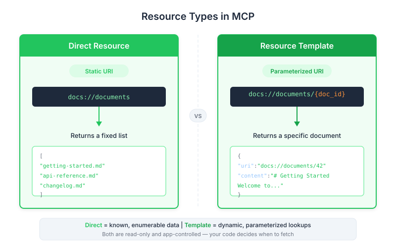

| Item | Detail |
|---|---|
| Exam Domain | D2 — Tool Design & MCP Integration (18%) |
| Task Statements | 2.3 (MCP server primitives), 2.4 (resource URI design), 2.5 (MIME type handling) |
| Source | introduction-to-model-context-protocol / 03-resources-and-prompts / Lesson 10 |
Resources are the "reference library" of an MCP server — they let your application pull in data for display or context, like a librarian fetching a book when someone asks for it by name.

As a PM, you shape product requirements that determine whether a feature should use a resource, a tool, or a prompt. Getting this wrong means:
Think of an MCP server as an office building with three departments:
| Department | MCP Primitive | Who Decides to Use It | Office Analogy |
|---|---|---|---|
| Filing Cabinet | Resource | The receptionist (your app) | Receptionist pulls a file to hand to a visitor |
| Action Desk | Tool | The executive (Claude) | Executive decides to call accounting to process a refund |
| Workflow Manual | Prompt | The employee (user) | Employee follows a standard procedure checklist |
Resources are the filing cabinet. Your application code opens the drawer, pulls out the file, and either shows it in the UI or hands it to Claude as context. Claude never goes to the filing cabinet on its own — that distinction is critical.
Like asking a librarian: "Show me all available books." The request is always the same, the URI is fixed.
docs://documents (no variables)Like asking: "Show me the book with ID plan.md." The request includes a parameter.
@plan.md, the system fetches that specific documentdocs://documents/{doc_id} (variable part in braces)Imagine you are designing a chat interface where users can reference documents:
@ — your app calls the "list all documents" resource to populate an autocomplete menuplan.md — your app calls the "fetch specific document" resource with doc_id=plan.mdThis is faster and smoother than the alternative (Claude calling a tool to fetch the document), because the data is already in the prompt before Claude starts thinking.
When writing a PRD for an AI feature, ask:
| Question | If Yes... | If No... |
|---|---|---|
| Does the data need to appear in the UI (dropdown, sidebar)? | Resource | Maybe a tool |
| Should the data be pre-loaded as context before Claude responds? | Resource | Tool if Claude needs to decide |
| Does fetching this data have side effects (write, delete, charge)? | Tool (never a resource) | Resource is safe |
| Does Claude need to autonomously decide when to fetch this? | Tool | Resource |
Resources include a "format hint" that tells the client how to display the data:
| Format Hint | What It Means | Product Implication |
|---|---|---|
application/json |
Structured data (lists, tables) | Can render as rich UI components |
text/plain |
Raw text | Display as-is or inject into chat |
application/pdf |
Binary document | May need special viewer |
This matters for your UI spec — knowing the data format helps you design the right display component.
@mention UX pattern that users find intuitiveKey Insight
The most important thing a PM needs to remember about resources: they are app-controlled. Your application code decides when to fetch the data. This means you can guarantee the data is available before Claude starts reasoning, which leads to faster response times and better UX.
| Front | Back |
|---|---|
| Who controls when MCP resources are accessed — Claude, the app, or the user? | The application code (app-controlled) |
| What are the two types of MCP resources? | Direct resources (fixed URI, no parameters) and Templated resources (URI with variable placeholders) |
| What is the product UX pattern that resources naturally support? | The @mention autocomplete pattern — type @, see available items, select one, content injected into prompt |
| When should a PM specify a resource instead of a tool in a PRD? | When data is read-only, needs to appear in UI, or should be pre-loaded as context before Claude responds |
| What does the MIME type hint do for resources? | Tells the client application how to interpret and display the returned data |
| Why are resources faster than tools for providing context? | Resource data is injected directly into the prompt before Claude starts reasoning, avoiding an extra round-trip |
| Can a resource have side effects (write, delete, charge)? | No — resources are read-only. If side effects are needed, use a tool instead |
| In the office analogy, what is a resource? | The filing cabinet — the receptionist (app) pulls files from it to hand to visitors or to add to meeting briefings |